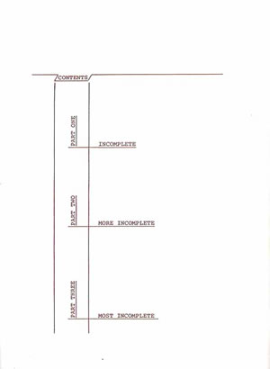
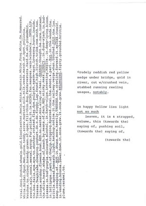
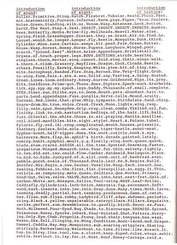
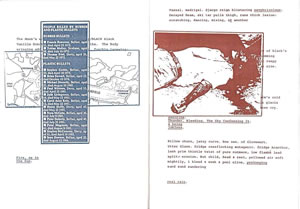

Peter Manson
A Natural History in 3 Incomplete Parts
(London: Magenta Press, 1985).
Maggie O’Sullivan’s book A Natural History in 3 Incomplete Parts was published by her own press, Magenta, in 1985. The texts included in the book were written between June 1984 and April 1985, and the book was printed and bound by the author in collaboration with the poet, printer and publisher Bob Cobbing, who had published a version of part one of the book, An Incomplete Natural History, the previous year. In an interview with Redell Olsen, conducted in 2003, O’Sullivan has described the process of making the book:
“Bob Cobbing and I made [it] together at his place – (we constructed the entire book going from xeroxing my original pages, collating, binding, glueing, trimming the A5 pages, etc. and it took us a 5-day working week – Monday – Friday - to do this – working intensively from 10 til 5 every day and getting to grips with the brand-new binding machine Bob had just bought!). We’d planned to launch it on the Saturday, so it simply had to be done that week!”
A Natural History is one of the many extraordinary multicoloured books which issued from Bob Cobbing’s photocopier in the 1980s. The book itself is printed in alternating pages of reddish brown and dark blue ink. The wraparound cover is printed in two colours on orange paper, a process which could only be achieved on a monochrome copier by passing the paper twice through the machine, once with the blue toner installed, once with the red. As the interview suggests, it was a labour-intensive process, and in the end only around eighty copies of the book were printed. The book has recently been made available in black-and-white facsimile in O’Sullivan’s volume Body of Work (Reality Street Editions 2007, henceforth BOW), alongside many other pamphlets and uncollected works from the 1970s and 80s. All page references in this paper will be to the text in Body of Work, but for web publication it seemed appropriate to take page scans from the multi-coloured original edition.
The book is, as the title says, divided into three parts. The contents page (BOW 70, Fig. 1):

Fig 1: Click image to enlarge
gives them the sub-titles “INCOMPLETE”, “MORE INCOMPLETE” and “MOST INCOMPLETE”, the space between the subtitles increasing as you go down the page, suggesting a project whose incompleteness can only increase, reality accelerating and expanding beyond the grasp of anything that could be called “a history”.
The text is visually highly distinctive, composed on a manual typewriter and mostly in lower case, with occasional words picked out in upper case, or with initial capitals, or by underlining. Punctuation varies from passage to passage, but most commonly there is a full stop or period instead of a space between each word, so that the text seems almost nailed into position on the page. While this encourages the reader to read each word as an independent unit, not bound into a conventionally syntactic relationship with its neighbours, in fact the syntax often runs on quite independently of the punctuation. Sometimes individual words are omitted from the matrix, causing the dots to line up as points of suspension, so perhaps it’s best to interpret the dots as rhythmic markers, discouraging the performing voice from modulating its stresses too naturalistically, rather than as strictly reliable signals of extreme parataxis.
The text signals very early on its kinship with the kind of open-field poetics you might associate with Charles Olson or Susan Howe: “Skin of Open Fields, the” (BOW 72). For an open field to have a skin implies that this field has depth, like real earth, and the words picked out in capitals or by underlining do seem to stand out in an implied foreground against the ground plane of surrounding text. I’ll come back to this, but for now it’s worth noting the pleasurable contradiction between a text which is often, given the dots and the lack of declared line-breaks, denser than any page of prose, and the ease with which the skimming eye picks out the few emphasised words, quite out of sequence. An example would be in the text printed sideways in Fig. 2 (BOW 76):

Fig. 2: Click image to enlarge
where capitalisation and underlining pick out the sequence RED ... NARROW .... RED … LUNACY … But … JULY … BUT … TRESSES, the hidden buttresses only visible to a non-linear reader.
A possible source for part of the text (BOW 74)
scold-struck.melt.incline.dip.gate.goes.fruit-
scent.air.opal.desette.FLAUNT.each.blot.&.blur.torrential.almond.kidd
ler.night.MOSTLY.BLOOD.CRISP.mostly.veil.couch.wick.in.vert.&.coil.
.b/ween.shudder.burst.several…
is John Bunyan’s poem “Upon A Sheet Of White Paper” (numbered XLVIII in the posthumously published book of emblems A Book For Boys And Girls Or, Temporal Things Spiritualized) where the phrase “blot and blur” occurs twice:
UPON A SHEET OF WHITE PAPER
This subject is unto the foulest pen,
Or fairest handled by the sons of men.
‘Twill also show what is upon it writ,
Be it wisely, or nonsense for want of wit,
Each blot and blur it also will expose
To thy next readers, be they friends or foes.
Comparison.
Some souls are like unto this blank or sheet,
Though not in whiteness. The next man they meet,
If wise or fool, debauched or deluder,
Or what you will, the dangerous intruder
May write thereon, to cause that man to err
In doctrine or in life, with blot and blur.
Nor will that soul conceal from who observes,
But show how foul it is, wherein it swerves.
A reading man may know who was the writer,
And, by the hellish nonsense, the inditer.
The sheet of white paper, both subject and substrate of the poem, is implicated in an act of communication whose entire process takes place to the exclusion of women. The sons of men are the writers, the reader is a reading man, and even the paper itself is an erring, written-upon man. O’Sullivan’s poetry could in the circumstance have no finer aim than instead to "FLAUNT.each.blot.&.blur". It is worth recalling that this book is called a History, and that her major project of the latter half of the 1990s is called her/story: eye.
One of the book’s tours-de-force is Fig. 3 (BOW 78), an extraordinarily densely-woven text drawing on the science, mythology and phenomenology of insects:

Fig. 3: Click image to enlarge
The page is topped by a set of three underlined headings, “introduction of sound:” “introduction of sight:” and “introduction of texture”, and in fact this is one of the pages which is refunctioned in the middle section of the book by the introduction of literally collaged material which partly obscures the text.
This middle section is subtitled “More incomplete” and has an epigraph from Canto CXVI by Ezra Pound, “If love be not in the house there is nothing”. I think it’s significant that O’Sullivan doesn’t quote the next line in the Pound poem, “The voice of famine unheard.” The voice of famine, unheard and unquoted, resonates strongly in O’Sullivan’s work: half of her family is from Skibbereen in West Cork, one of the areas most severely stricken by the Great Irish Famine of 1845-52, and she has dealt explicitly with the famine in such later texts such as — that bread should be —, published in 1996. This part of A Natural History pays moving tribute to both of O’Sullivan’s parents, the gentleness and self-effacement of the mother,
Peel tender mother
Delving
(like noBODY at all) (BOW 87)
contrasted with the volatile portrayal of her dad,
STUB.SKITE.&.CATCH.THEM.CAUSAL/John.L./
caraway.Cork/LOUD.F’s.&.BLINDING/boot-nail/mutton-
vestment/WILD/gentle/WILD/meridian.January.slunk.slung.elliptical.daddle. (BOW 89)
Ireland intervenes more violently later in this section of the poem, but in the meantime there’s the paradox of BOW 90, which consists of the line
THIS.IS.RED.&.THIS.IS.PINK.THIS.IS.RED.&.THIS.IS.PINK.
repeated 25 times, with a final emphatic THIS. The text is in fact printed in blue, reminding the reader that what they are looking at is not the original typescript but a photocopy of it, possibly an unreliable copy. O’Sullivan, like her mentor Bob Cobbing, is a poet who fully acknowledges the fact that modern printing technologies like offset litho and photocopying are basically kinds of photography, and a photograph can be of anything you like, even a poem.
The collaged material in part 2 of A Natural History includes (Fig. 4, BOW 100f) a map of the Greenham Common cruise missile base, site of a series of women’s protest camps in the 1980s and 90s, overlaid by a press cutting naming 15 victims of the use of rubber and plastic bullets against civilians in Northern Ireland:

Fig 4: Click image to enlarge
The facing page shows a photograph of a striking worker, murdered in Mexico in 1934. The interruption of text by image and image by image is appropriate to the themes of invasion and violation which the collaged materials introduce, and the meaning of such text as remains visible is altered by its new context. “Fire, as in / the Sun” becomes a comment on the use of plastic bullets, and the lines “describe./Thunder. Bleeding. The Sky Confessing It./ & being / jobless” now emerge from beneath the photograph of the murdered worker. The overlaying of elements implies a low 3-dimensional relief of which the book only gives us a 2-d snapshot. The idea that the poem might be a uniquely constructed physical object that we only glimpse in reproduction becomes stronger in O’Sullivan’s later work (see for example the drawn and painted passages in murmur), but it’s already strongly suggested by A Natural History.
The epigraph to Part 3 of A Natural History in 3 Incomplete Parts is the Zen koan, “Come in all that is outside”, and appropriately, the section is sub-titled “MOST INCOMPLETE”. At its heart is the text “SINGULAR VERBS & PLURAL SUBJECTS” (BOW 110), a ritual of incorporation set out almost like a recipe on the page, and foreshadowing more recent O’Sullivan texts like “NARCOTIC PROPERTIES” from Palace of Reptiles. The litany of things to be brought within the remit of the poem begins with the lapidary, herbal and bestiary,
BRING
asher wristing Pearl Smock, amethyst/
Incandela.
BEAT & SAY &
Near Lift the Sun’s
myrtle tie satin maché hangdish.
BRING
Hobday. Scrub hawk, woodish clove hearse,
Voice Thorn, seethe glazer, Welted May
and ends by admitting, as if in the hope of defeating by naming, some very human instances of violence:
blade o/head.
implacable brutality
skirts the edge of gown,
Vast Needle
stoking twilight,
baked mutter, satin bluesy isle of aloe antic
w/loaves & Bowl
&
Sink in the Bone.
Shrapnel.
The book draws to a close with echoes of the structure of a textbook: an alphabetized, index-like list of LEAD VOCALS (BOW 117), a list of sixteen COLOUR PLATES where one longs for the images that could live up to these captions: “JAM-SHOT MUFF SLIT SEEDLER”, “RAT-LICKED BAIZE ORCHID” or “MALLOW-MITTENED TEASY INTER-SECTION” (BOW 120f.) Two sections headed “READING WRITING (a DOCUMENTARY)” (BOW 122f.) might set up expectations of a documentary on the making of the book, David Attenborough style, but their texts imply no such metatextual distancing, casting the same weather eye on human and non-human, even vegetable, life and death. One ends,
wild plum ever silken, fucking shot
knife took
u/neath.
the other
FREEZEWORT
KeptCoal
IN THE DAY’S EYE.
If the book isn’t in any conventional sense a natural history, it’s because O’Sullivan recognises that even natural histories tend to be written by the winners, and she sees neither the possibility nor the point of victory. In the book’s albeit perpetually outrun project of inclusion, empathy and malediction, extending far beyond the reach of cultural and biological determinacy, there is, however, much cause for optimism.
References:
Bunyan, John, A Book For Boys And Girls Or, Temporal Things Spiritualized. London: R. Tookey 1701. Quoted from the online edition at http://www.mountzion.org/johnbunyan/text/bun-boys.htm (accessed 21st February 2007).
Olsen, Redell, online interview with Maggie O’Sullivan at http://www.asu.edu/pipercwcenter/how2journal/archive/online_archive/
v2_2_2004/current/workbook/writing.htm (accessed 21st February 2007).
O’Sullivan, Maggie, A Natural History in 3 Incomplete Parts. London: Writers Forum 1985.
O’Sullivan, Maggie, Body of Work. Hastings: Reality Street Editions 2007.
O’Sullivan, Maggie, murmur. Online at http://www.maggieosullivan.co.uk/murmur.html (accessed 21st February 2007).
O’Sullivan, Maggie, Palace of Reptiles. Willowdale, ON: The Gig 2003.
O’Sullivan, Maggie, — that bread should be —. London: RWC 1996.